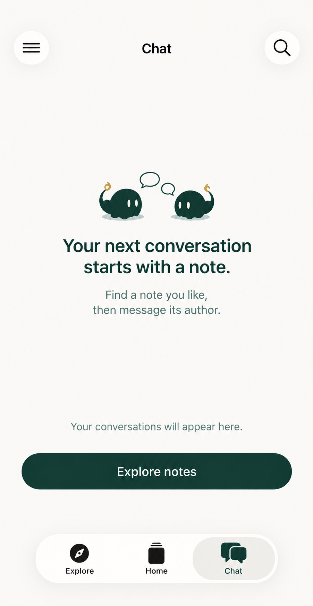
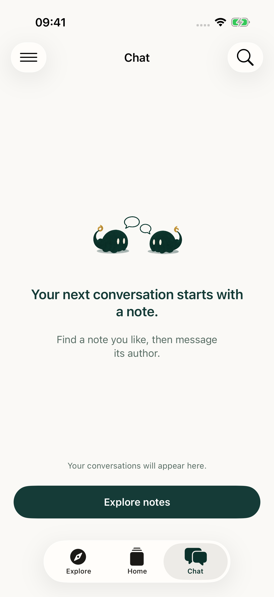
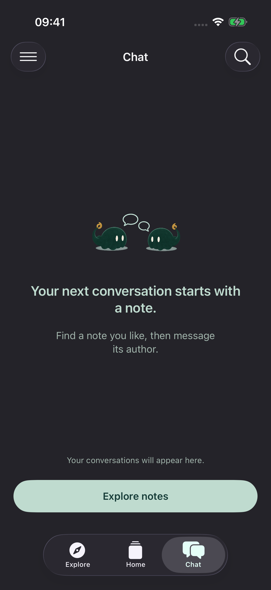
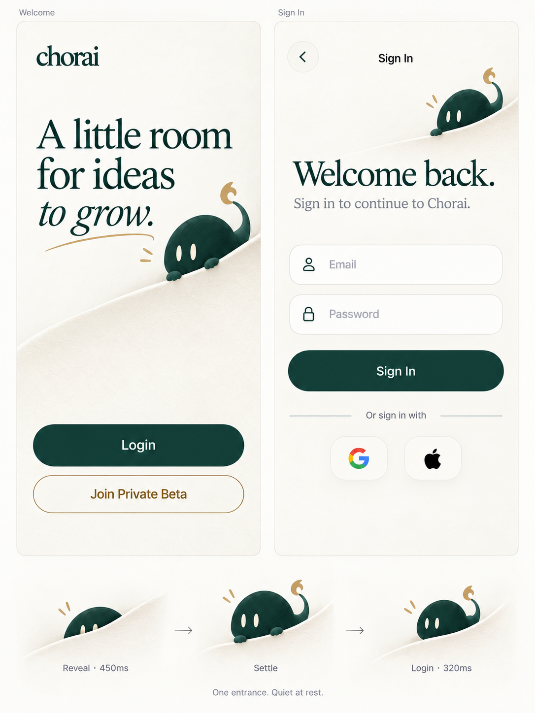
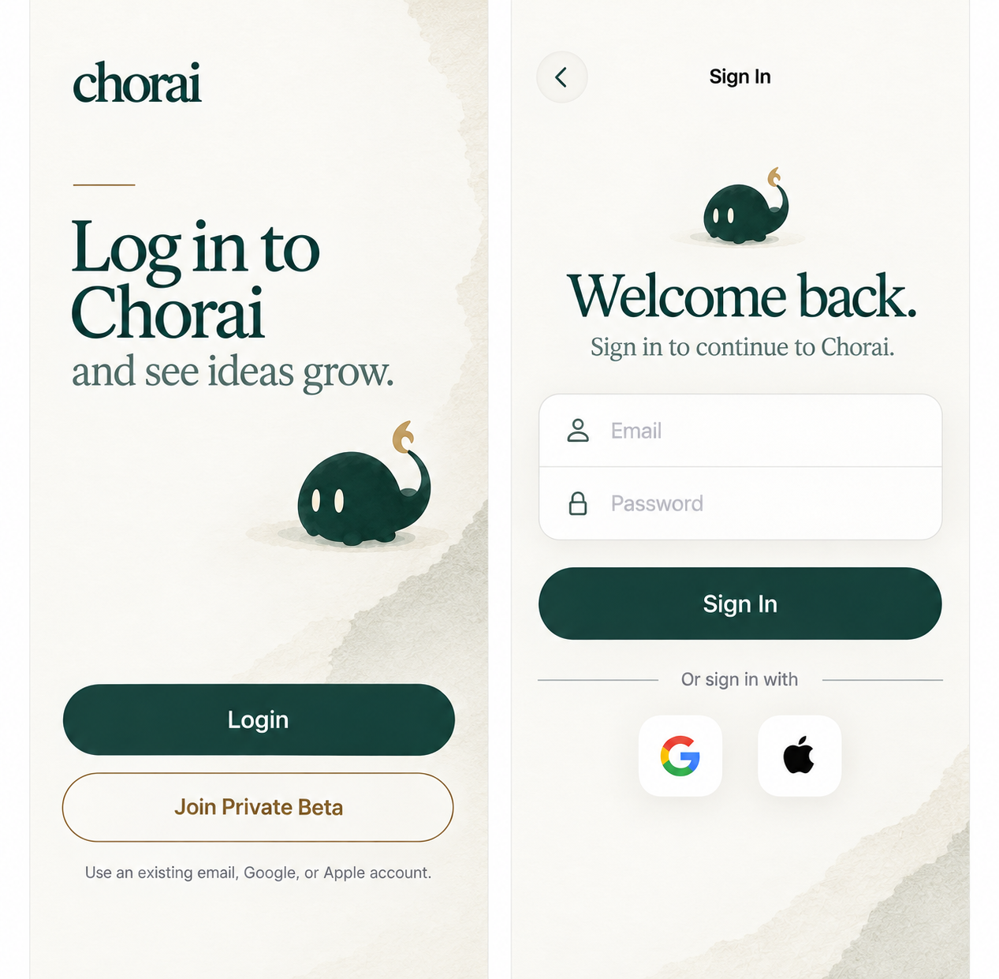

CHORAI · 2026.10.29 · DESIGN REVIEW 03
上一轮方案欢迎与登录，
以及 Chat 和侧栏。
Chat 延续已选方案 3，调整 Chora 的呈现。欢迎页与登录页提供六组配套设计；侧栏修改单独用原生 App 截图对照。
01 · CHAT
已选方案 3 · Chora 调整

Chat 调整图准备中图像就绪后，刷新此页查看。
查看原图 ↗
保留已选方向，聚焦 Chora。
这一张是上一轮方案 3 的继续调整，单独展示，不与欢迎和登录方案混合编号。
空态仍服务于现有路径：浏览笔记，认识作者，再开始交流。设计图用于确认构图、留白与 Chora 的视觉呈现。
已加入原生 App；按钮进入 Explore 与最大辅助字号的两项自动交互测试已通过。加载、失败、成功空列表分别呈现。
对照上一轮 Chat 方案 ↗原生实现
自动交互测试实际截图
深色原生实现
实际运行截图
REFINEMENT · 2026.10.30
1 + 2 · 灵动修订
针对上一版“没有灵动的设计感”：让小 Chora 从纸页后探出，文字、纸页与角色形成同一个构图。温白、墨绿与学院金继续保留。下面三帧表达短暂探头、停稳、进入登录页的过渡意图。

拟议动效：首次进入约 450ms 探出后停稳；点击 Login 时约 320ms 缩小并移向登录页。减少动态效果时仅淡入；输入区域保持稳定。时长是设计建议，未在原生设备验证。
REFINEMENT · 1 + 2
方案 1 + 2 · 上一版融合稿
延续方案 1 的温白纸感、衬线排版与细金线，加入方案 2 的小 Chora。欢迎页作为陪伴性的视觉中心，登录页缩小，保持表单清楚。原来六套完整保留。

02 · WELCOME + SIGN IN
欢迎页与登录页 · 六组配套设计
每组展示同一套风格下的欢迎页与 Sign In。这里的 landing 指现有 App 内欢迎页；六组按展示顺序编号。点击图像可打开原图放大查看。
六组保留同一条现有路径：欢迎页提供 Login 与 Join Private Beta；Sign In 保留 Email、Password、Google、Apple。Join Private Beta 先验证 Product Access Code，再进入注册。这里只比较视觉，不新增登录方式或改变访问权限。